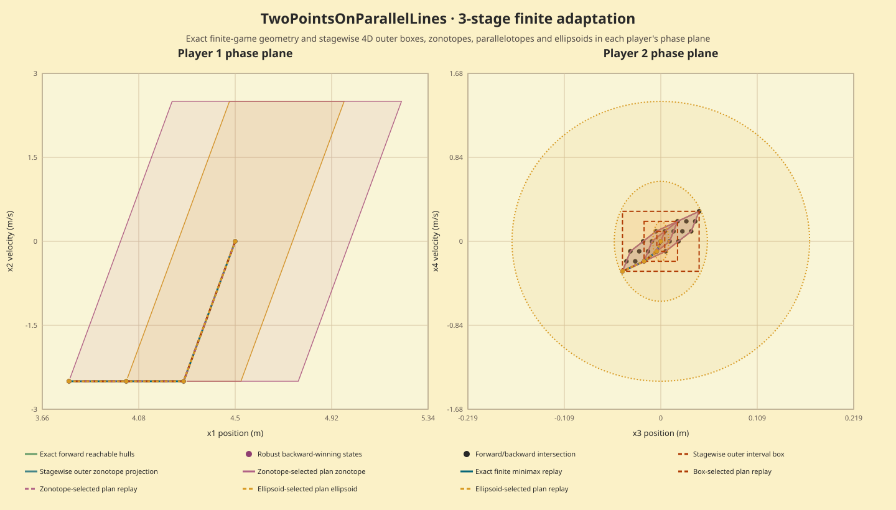
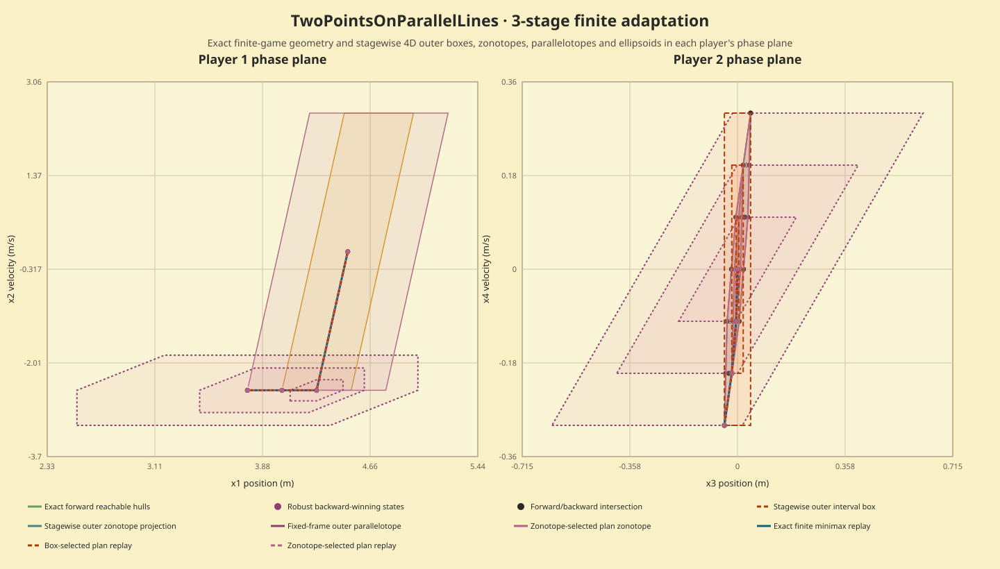

This is a finite-catalog adaptation of the upstream differential game, not a reproduction of its continuous-action 10-second RL task. The state order is (x1,x2,x3,x4); there are three stages, controls (-2.5, 0, 2.5), disturbances (-1, 0, 1), initial state (4.5,0,0,0), and terminal squared player-position gap. Re-expressing the pinned source's ten Euler substeps gives x1'=x1+0.01x2+0.09u, x2'=u, x3'=x3+0.1x4+0.0045v, x4'=x4+0.1v; in particular, damping in the first player's velocity equation resets its velocity to the current input each outer step.
The methods use identical inputs and each attempts to score all 27 fixed control plans. Every completed selected plan is replayed across all 27 disturbance histories. An independent exact rational checker verified 25 completed timed outcomes and the exact finite minimax optimum, 14.58094225. Measurement status: verified; 0 failed attempts are retained in the raw run record.
| Track | Runs | Median | Range | Work checked |
|---|---|---|---|---|
| Exact finite polytope | 5/5 | 0.360 ms | 0.345–0.369 ms | 0 failed attempts; completed outcomes checked against all 27 histories |
| Outer box | 5/5 | 0.181 ms | 0.177–0.184 ms | 0 failed attempts; completed outcomes checked against all 27 histories |
| Outer zonotope | 5/5 | 151.913 ms | 151.314–152.705 ms | 0 failed attempts; completed outcomes checked against all 27 histories |
| Fixed-frame parallelotope | 5/5 | 0.691 ms | 0.687–0.705 ms | 0 failed attempts; completed outcomes checked against all 27 histories |
| Axis-aligned ellipsoid | 5/5 | 0.214 ms | 0.206–0.234 ms | 0 failed attempts; completed outcomes checked against all 27 histories |
This local run was uncapped: no process-tree wall-time or memory limit was requested or enforced, and process-tree peak memory was not observed. The methods use different candidate scoring rules: approximate enclosure corner/support scores are numerical ranking estimates, not certified objective bounds. The replay values are feasible finite-catalog witnesses, not proof that an approximate selector found the global minimizer. The timing table does not establish a general winner.
A separate instrumented Release profile ran 10 zonotope calls. GNU gprof sampled 1.52 s; score_corners accounted for 63.20% of sampled self CPU (0.79 s). This identifies the dominant work in this zonotope fixture; the profile build is excluded from the timing table. Its 10 ms sample resolution and single fixture limit the conclusion.
Five separate Release report-data generation, rational checking, serialization and checksum trials had median 0.992 s (range 0.970–1.011 s).
These saved projections show the two requested player phase planes: (x1,x2) and (x3,x4), with stage-labelled forward/backward geometry, intersections and replayed paths. The tracks are split across two checked source result bundles; both use the same frozen geometry reference and finite-game fixture.


Raw run record · Independent check · Limiter profile · Reproduction notes · source commit